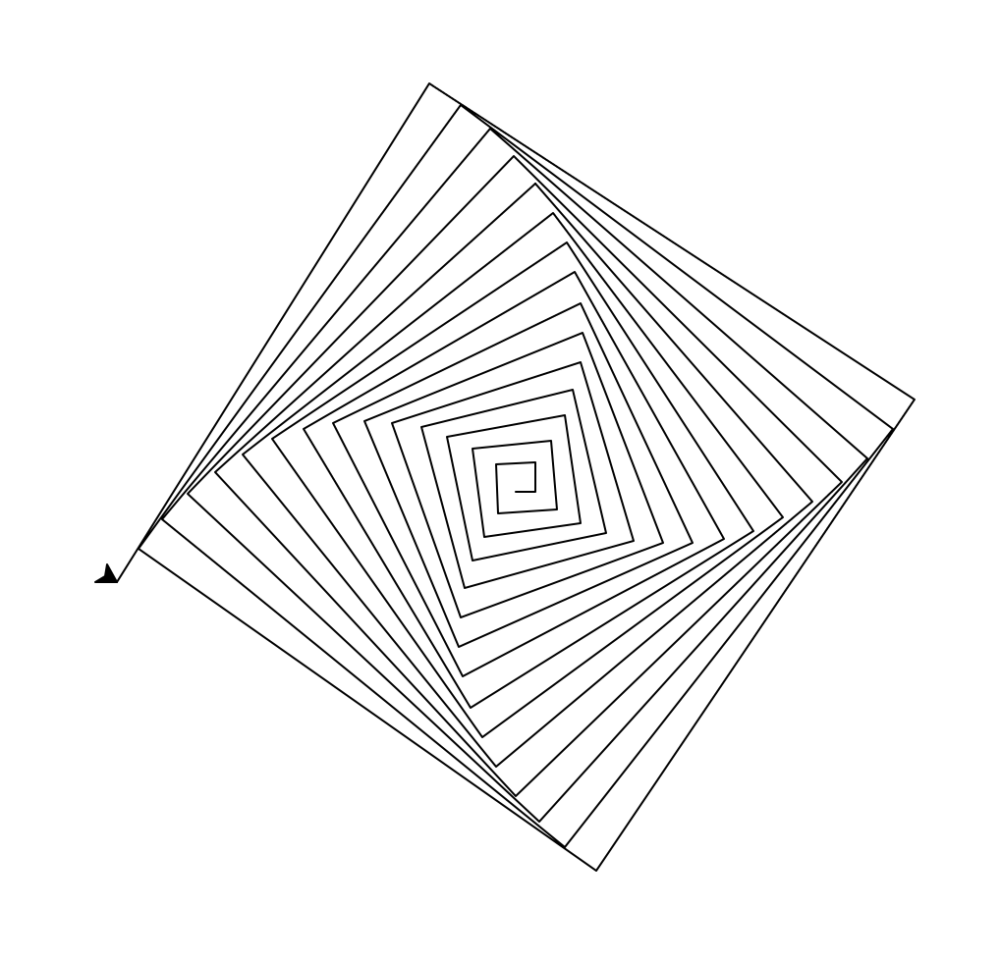
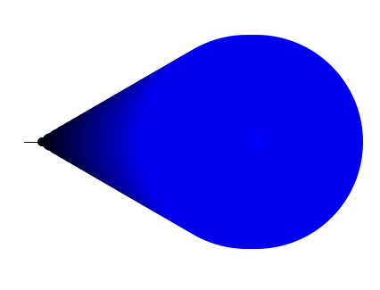

Submit the following programs via Gradescope:
- Due Date: September 10 Reading: Lab 1
Write a program that prints "Hello, World!" to the screen.
- Due Date: September 11 Reading: Lab 1
Write a program that draws an Octagon using the turtle library.

Note: Whenever submitting a turtle program, choose a name for your file that is not turtle.py. When executing the "import turtle" statement, the computer first looks in the folder where the file is saved for the turtle module and then in the libraries (and other places on the path). So, it thinks the module is itself, causing all kinds of errors. To avoid this, name your program something like "myTurtle.py" or "program2.py". - Due Date: September 12 Reading: Lab 1
Write a program that implements the pseudocode ("informal high-level description of the operating principle of a computer program or other algorithm") below:
Repeat 36 times: Walk forward 100 steps Turn left 145 degrees Walk forward 10 steps Turn right 90 degrees Walk forward 10 steps Turn left 135 degrees Walk forward 100 steps
- Due Date: September 13 Reading: Lab 1
Write a program that will print "I love Python!" 25 times.
The output of your program should be:
I love Python! I love Python! I love Python! I love Python! I love Python! I love Python! I love Python! I love Python! I love Python! I love Python! I love Python! I love Python! I love Python! I love Python! I love Python! I love Python! I love Python! I love Python! I love Python! I love Python! I love Python! I love Python! I love Python! I love Python! I love Python!
- Due Date: September 16 Reading: Lab 1
Write a program that uses the turtle library to draw a 5-pointed star.
Your output should look like this:

Hint: To draw the 5-pointed star, the turtle must turn a total of 720 degrees. How many degrees does the turtle need to turn at each point?
- Due Date: September 17 Reading: Think CS
Section 4.7
Write a program that prints out the numbers from 2 to 17.
The output of your program should be:
2 3 4 5 6 7 8 9 10 11 12 13 14 15 16 17
- Due Date: September 24 Reading: Lab 2
Using the string commands introduced in Lab 2, write a Python program that prompts the user for a message, and then prints the message, the message in upper case letters, and the message in lower case letters.
A sample run of your program should look like:
Enter a message: Mihi cura futuri Mihi cura futuri MIHI CURA FUTURI mihi cura futuri
Another run:
Enter a message: I love Python! I love Python! I LOVE PYTHON! i love python!
Hint: Your program should be able to take any phrase the user enters and prints it, it in upper case letters, and it in lower case letters. To do that, you need to store the phrase in a variable and print variations of the stored variable.
- Due Date: September 26 Reading: Lab 2
Write a program that prompts the user to enter a phrase and then prints out the ASCII code of each character in the phrase.
A sample run of your program should look like:
Enter a phrase: I love Python! In ASCII: 73 32 108 111 118 101 32 80 121 116 104 111 110 33
And another sample run:
Enter a phrase: ABC In ASCII: 65 66 67
Hint: If c is a character, ord(c) returns its ASCII code. For example, if c is 'I', then ord(c) returns 73. See Lab 2.
- Due Date: September 27 Reading: Lab 3
Write a program that asks the user for the hexcode of a color and then displays a turtle that color.
Make sure the turtle is the correct shape by including turtle.shape("turtle") in your program.
A sample run of your program should look like:
Enter a hex string: #A922A9
and the output should look similar to:

- Due Date: September 30 Reading: Lab 3
Write a program that implements the pseudocode below:
For i = 5, 10, 15, 20, 25, ... ,300: Walk forward i steps Turn left 91 degreesYour output should look similar to:
Hint: See examples of range(start,stop,step) in Lab 2.
- Due Date: October 1 Reading: Lab 3
Modify the program from Lab 3 to show the shades of blue.
Your output should look similar to:
 - Due Date: October 7 Reading: Lab 3
Draw a cornflower blue pentagon using the turtle library. You can specify the color by name ("cornflowerblue"), by hex string ("#6495ED"), or by 255-mode values (100, 149, 237). The turtle should be turtle shaped. Your turtle should move forward 100 units, turn left the correct amount of degrees, and then stamp.
A sample run of your program will look like:

Hint: See Lab 3.
- Due Date: October 8 Reading: Lab 2
Write a program that asks the user for a message, then prints out that message in reverse. The reversed output message should be printed with two copies of each character per line.
A sample run of your program should look like:
Enter a message: I love Python! ! ! n n o o h h t t y y P P e e v v o o l l I I
Hint: use a for-loop that starts at the last index in the string and stops at the first index in the string:
lastIdx = len(myString) - 1 for i in range(lastIdx, -1, -1): #print each character in myString, twice on each line
- Due Date: October 9 Reading: Lab 4
Write a program that asks the user for 5 whole (integer) numbers. For each number, turn the turtle left the degrees entered and then the turtle should move forward 100.
A sample run of your program should look like:
Enter a number: 270 Enter a number: 100 Enter a number: 190 Enter a number: 200 Enter a number: 80
and the output should look similar to:

- Due Date: October 15 Reading

(The cipher disk above shifts 'A' to 'N', 'B' to 'O', ... 'Z' to 'M', or a shift of 13. From secretcodebreaker.com.)Write a program that prompts the user to enter a word and then prints out the word with each letter shifted right by 13. That is, 'a' becomes 'n', 'b' becomes 'o', ... 'y' becomes 'l', and 'z' becomes 'm'.
Assume that all inputted words are in lower case letters: 'a',...,'z'.
A sample run of your program should look like:
Enter a word: zebra Your word in code is: mroen
Hint: You can use this file to get started with this assignment.
- Due Date: October 16 Reading: Lab 4
Write a program that converts kilometers to miles. Your program should prompt the user for the number of kilometers and then print out the number of miles.
A useful formula: miles = 0.621371*kilometers.
- Due Date: October 22 Reading: Lab 4
Write a program that implements the pseudocode below:
1. Ask the user for the number of hours until the weekend. 2. Print out the days until the weekend (days = hours // 24) 3. Print out the leftover hours (leftover = hours % 24)
A sample run of your program should look like:
Enter number of hours: 27 Days: 1 Hours: 3
and another sample run:
Enter number of hours: 52 Days: 2 Hours: 4
Hint: See Section 2.7.
- Due Date: October 23 Reading: Lab 5
Following Lab 5, write a program that asks the user for the name of a png file and print the number of pixels that are nearly white (the fraction of red, the fraction of green, and the fraction of blue are all above 0.75).
For example, if your file was of the snow pack in the Sierra Nevada mountains in California in September 2014:
then a sample run would be:
Enter file name: caDrought2014.png Snow count is 38010
Note: for this program, you only need to compute the snow count. Showing the image will confuse the grading script, since it's only expecting the snow count.
- Due Date: October 28 Reading: Lab 2 and Lab 4
We can store DNA sequences as strings. These strings are made up of the letters A, C, G, and T. For a given DNA string, the GC-content is the percent of the string that is C or G, written as a decimal.
Write a program that prompts the user for a DNA string, and then prints the length and GC-content of that string.
A sample run of the program:
Enter a DNA string: ACGCCCGGGATG Length is 12 GC-content is 0.75
Hint: You can use a for-loop to go through each character in the string, and count each time you encounter a 'C' or 'G'. You can use an if-statment to check what kind of character the loop is currently on. Alternatively, you can use the count() method introduced in Lab 2 to get the total occurrences of 'C' and 'G' in the string.